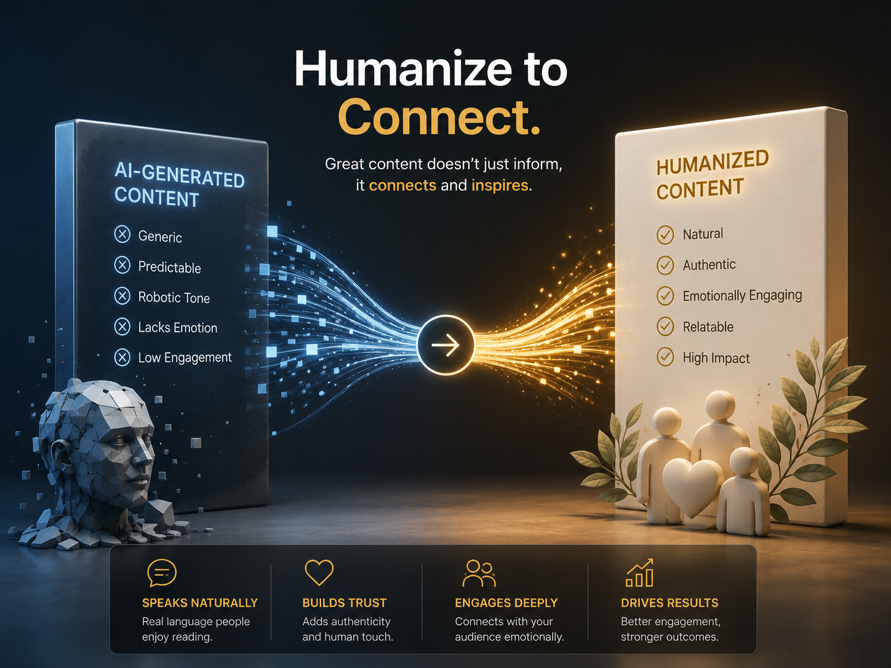

AI-generated content is often structurally useful. It can organize ideas, create an initial draft and reduce the time required to begin. The problem starts when the first output is treated as the final version.
Raw AI text may be grammatically correct while still feeling distant, repetitive or overly predictable. Readers notice when sentences sound manufactured rather than written for them. Humanization addresses this gap without discarding the strategic value already present in the draft.
What AI content humanization really means
Humanizing AI content is not simply replacing a few words or making sentences more casual. It is the process of reshaping the text so that it communicates like a thoughtful person or a recognizable brand.
A properly humanized article should retain the original facts, intent and useful structure while improving:
- Natural sentence rhythm and variation.
- Clarity and logical flow between ideas.
- Audience relevance and emotional intelligence.
- Brand voice, confidence and credibility.
- Specificity instead of generic statements.
Why AI-generated content often sounds robotic
Artificial intelligence predicts language patterns. Because it works from patterns, it frequently produces safe, balanced and familiar phrasing. That can make the output technically correct but emotionally flat.
Repeated sentence structures
AI drafts often use similar sentence lengths and predictable transitions. This creates a mechanical reading rhythm even when every sentence is individually correct.
Generic claims without meaningful detail
Expressions such as “in today’s digital world” or “businesses must stay competitive” communicate very little unless they are supported by useful context.
Overexplaining simple ideas
AI frequently expands basic points into unnecessary paragraphs. Human editing identifies the central message and removes anything that weakens it.
Artificial enthusiasm
Excessive adjectives, exaggerated benefits and constant positive language can make the content feel less trustworthy. Strong writing does not need to sound excited in every sentence.
Humanization is not about hiding the use of AI. It is about making sure the final content deserves a human reader’s time.
How to preserve the original meaning
The most important part of humanization is protecting the core message. Rewriting should improve expression without changing the information, argument or intended outcome.
Before editing, identify three things:
- The central idea: What must the reader understand?
- The supporting points: Which facts or examples make the idea credible?
- The intended action: What should the reader think, feel or do next?
These three elements form the boundaries of the rewrite. Tone, wording and structure may change, but the essential meaning should remain stable.

A practical AI content humanization process
1. Read the entire draft before changing anything
Editing sentence by sentence too early can cause inconsistencies. First understand the purpose, audience and overall argument.
2. Remove empty introductions
Begin with the reader’s problem, a meaningful observation or a clear promise. Avoid introductions that delay the useful content.
3. Replace generic phrases with specific language
Specific writing creates credibility. Replace broad statements with concrete outcomes, examples or relevant context whenever possible.
4. Vary sentence length and rhythm
Combine concise statements with longer explanatory sentences. Natural writing has movement. It does not follow one repeated pattern.
5. Strengthen transitions
Each paragraph should feel connected to the one before it. Transitions should reflect the actual relationship between ideas, not simply introduce another point.
6. Adapt the tone to the audience
A SaaS company, luxury brand and educational platform should not communicate in the same voice. Humanization must reflect the reader’s expectations and the brand’s positioning.
7. Perform a final accuracy check
Never allow stylistic improvements to introduce factual changes. Verify names, numbers, technical terms, claims and original requirements before publishing.
Common mistakes to avoid
Making everything casual
Human language does not always mean informal language. The right tone depends on the brand and context.
Using synonyms without improving the sentence
Word replacement alone does not improve logic, rhythm or relevance.
Adding personal opinions to factual content
A human voice should strengthen communication, not distort objective information.
Removing useful SEO structure
Headings, search intent and important terminology should remain strategically aligned.
Final quality checklist
Before considering an AI-generated draft fully humanized, confirm that:
- The main message remains accurate and complete.
- The introduction gives the reader a clear reason to continue.
- Sentence structure feels varied and natural.
- Generic filler has been removed.
- The voice is appropriate for the intended audience.
- Transitions create a logical reading experience.
- Claims, figures and terminology have been verified.
- The conclusion provides a meaningful next step.
AI can provide the raw material. Human judgment turns that material into content people can trust, understand and act on.